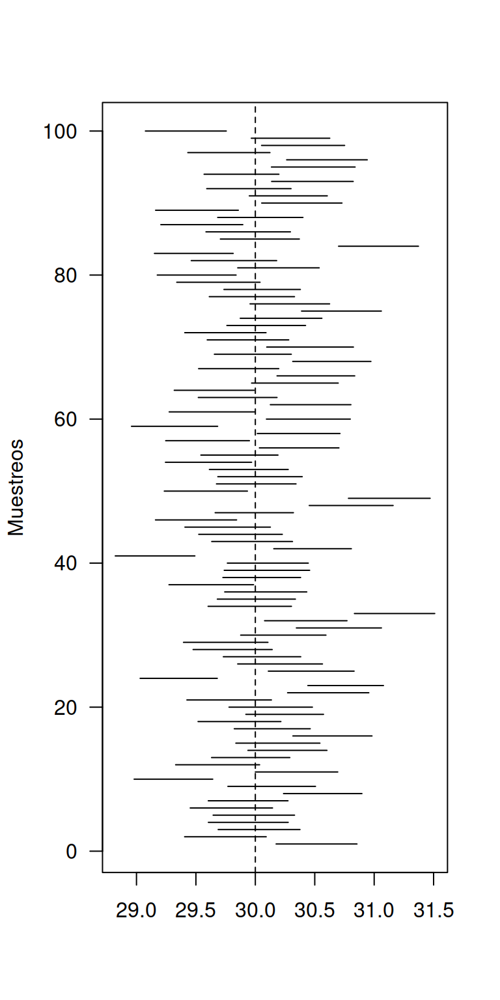

Unidad 3.2
dgonzalez

Simulación
Con el fin de entender el concepto de confianza se propone la simulacion como estrategia. Inicialmente se genera de manera simulada un conjunto de 100 muestras (m=100) cada una de tamaño n=200, de una población con distribución normal con \(\mu=30\) y varianza \(\sigma^2=10\) y un valor de confianza del 95% (\(\alpha=0.05\))
La gráfica dibuja los 100 intervalos de confianza en el cual se
pueden observar algunos unos pocos que no contienen el parametro (\(\mu=30\))
Confianza
m= 100 ## número de experimentos
n=300 ## tamaño de muestra
mux=30 # media poblacion
sdx=sqrt(50) # desviacion poblacion
a=0.05
x=rnorm(n*m, mux, sdx)
muestras=matrix(x, nrow = m)
icm=function(xx){
mxx=mean(xx)
sdxx=sd(xx)
p=1-a/2
lsxx=mxx+pnorm(p)*sdxx/sqrt(n)
lixx=mxx-pnorm(p)*sdxx/sqrt(n)
return(c(lixx,lsxx))
}
ICa=apply(muestras, 1,icm)
plot(1:100, type = "n",
xlim = range(ICa),
ylab = "Muestreos",
las=1,
xlab=" ")
abline(v = mux, lty = 2) ## la media poblacional.
for(i in 1:100) {
segments(ICa[1,i], i, ICa[2,i], i)
}
Estimaciones
IC para una media
Intervalo de confianza para una media
Como ejemplo se estima un IC para la la nota final de los estudiantes que cursaron la asignatura de Matemáticas Fundamentales, para una muestra de n=180
t.test(muestra1$NF,conf.level = 0.95)$conf.int[1] 2.842025 3.477975
attr(,"conf.level")
[1] 0.95IC para una proporción
Intervalo de confianza para una proporción
Como ejemplo se estima un intervalo de confianza para una muestra de tamaño 1000 para la proporción de fallecidos por covid en el Valle
ingciv=as.numeric(muestra1$CAR=="CIV")
t1=table(ingciv)
prop.test(t1[1],180, conf.level = 0.95)$conf.int[1] 0.1456842 0.2674394
attr(,"conf.level")
[1] 0.95IC para una varianza
Para calcular el intervalo de confianza para una varianza, he creado la siguiente función, dado que no está disponible en R
# parametros de entrada : x variable
# a alpha (confianza del 95% : a=0.05)
ic.var=function(x,a){
n=length(x)
per.chi2=qchisq(c(1-a/2, a/2), n-1) # percentiles chi-cuadrado para 95% de confianza
icvar=(n-1)*var(x)/per.chi2
return(icvar)
}
x1=rnorm(100)
ic.var(x1, 0.05)[1] 0.6422521 1.1242923IC comparación varianzas
Intervalo de confianza para la comparación de varianzas
Como ejemplo se toman dos muestras de las edades para las personas contagiadas por covid en el Valle
nota.civ=c(3,1.5,1,4.7,1.7,3.1,3,2.6,3.4,3.3,4.7,2.3,3.7,1.1,2.4,3.6,3.1,0.9,1.2,0.8,3.1,2.5,2.2,3.2,2,2.2,2,3.6,2.5,2.3,3.1,2.2,4,3,3.6,2.4,4.1,3.7,3,2.4,3,3.8,2.1,3,3.9,2,4.1,1.7,3,4.1,1.4,3.2,4.4,3.2,3.8,2.2,2.3,4.5,4.5,2.5,3.6,4.4,1.7,1.7)
nota.ind=c(3.5,3.3,2.4,4.6,3.8,2.5,3.1,3.5,4.7,1.2,3.2,0.7,0.8,3.4,4.1,1.5,3.2,4.2,3.7,1.3,3.2,4.7,3,4.6,2.4,4.5,4.4,4.3,3.9,4.3,3.1,1.8,3.1,4.3,3.1,2.6,3.1,4.1,4.3,3.5,3.3,3.7,3.6,2.4,3.5,4.3,3.3,2.2,3.5,4.5,4.1,0.9,3,2,3.8,2.1,2)
var.test(nota.civ, nota.ind)$conf.int [1] 0.5374026 1.5023015
attr(,"conf.level")
[1] 0.95IC medias grupos independientes
Intervalo de confianza para la comparación de medias grupos independientes, suponiendo varianzas iguales
Como ejemplo se toman dos muestras para comparar la edad de las personas contagiadas por covid en dos grupos independientes
t.test(nota.civ, nota.ind,
mu = 0,
paired = FALSE,
var.equal = TRUE,
conf.level = 0.95 )$conf.int [1] -0.737599195 0.006404019
attr(,"conf.level")
[1] 0.95Intervalo de confianza para la comparación de medias grupos independientes, con varianza diferentes
En este caso se toman dos muestras de grupos independientes, solo se realiza el procedimiento para mostrar la sintaxis en el caso de que las varianza sean diferentes
t.test(nota.civ, nota.ind,
mu = 0,
paired = FALSE,
var.equal = FALSE,
conf.level = 0.95 )$conf.int[1] -0.738826758 0.007631582
attr(,"conf.level")
[1] 0.95IC comparación proporciones
Comparación de proporciones
Para el ejemplo se toma una muestra de tamaño 1000 y se compara las proporciones de personas contagiadas y con estado grave y con estado moderado
nciv=65
nind=58
prop.test(c(nciv,nind),c(180,180), conf.level = 0.95)$conf.int[1] -0.06456736 0.14234513
attr(,"conf.level")
[1] 0.95